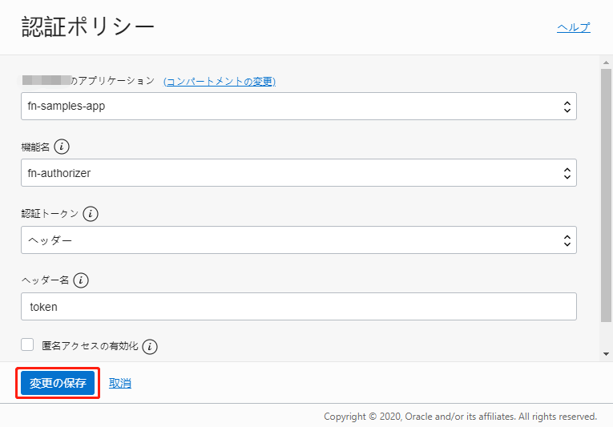
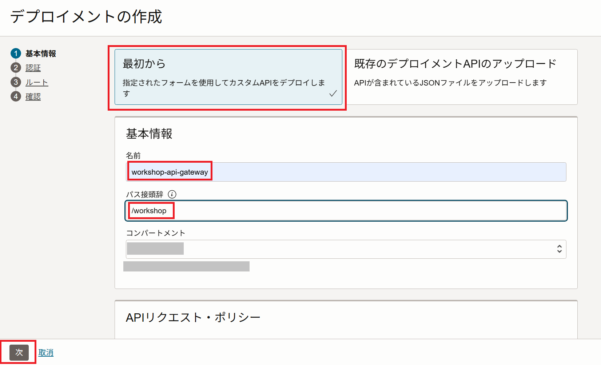
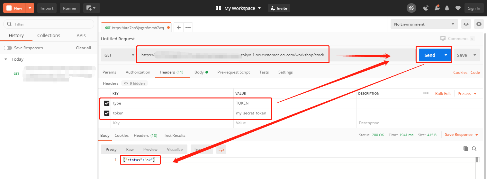

このハンズオンでは、Oracle Functionsを利用してOCI API Gatewayが渡されたクライアントシークレットをチェックし、正しいクライアントシークレットが含まれているかどうかに基づいてリクエストを許可したり拒否したりするシンプルなAuthorizer Functionを作成します。
条件
- クラウド環境
- 有効なOracle Cloudアカウントがあること
- 事前環境構築
- Fn Projectハンズオンが完了していること
- Oracle Functionsハンズオンが完了していること
- Oracle Cloud Infrasturcture API Gateway + Oracle Functionsハンズオンが完了していること
OCI API Gatewayでサポートしている認証および承認機能について
OCI API Gatewayでは複数の認証方式をサポートしています。詳細はAPIデプロイメントへの認証と認可の追加をご確認ください。
このハンズオンが完了すると、以下のようなコンテンツが作成されます。

1.Oracle Funstionsのでデプロイ
ここでは、Oracle Functionsの作成とデプロイを行います。
1-1.Oracle Functionの作成
Oracle OCIコンソールの左上にあるハンバーガーメニューをクリックして、[開発者サービス]⇒[ファンクション]に移動します。
Oracle Functionsに使用する予定のリージョンを選択します（Fn Project CLIコンテキストで指定されたDockerレジストリと同じリージョンを推奨します）。
ここでは、Ashburnリージョンus-ashburn-1を使用します。
利用するコンパートメントを選択します。
今回は、ルートコンパートメントを利用します。
[アプリケーションの作成]をクリックして、次を指定します。
- 名前：このアプリケーションに最初のFunctionをデプロイし、Functionを呼び出すときにこのアプリケーションを指定します。たとえば、
fn-samples-app。 - VCN：Functionを実行するVCN。今回は、Oracle Functionsハンズオンで作成したVCNを指定。
- サブネット：Functionを実行するサブネット。今回は、Oracle Functionsハンズオンで作成したVCNのサブネットを指定。

[作成]をクリックします。
1-2.Oracle Functionのデプロイ
Oracle Functionsハンズオンで利用したCloud Shellにログインします。
ソースコードをcloneし、ディレクトリに移動します。
git clone https://github.com/oracle-japan/function-authorizer-for-apigw.git
cd function-authorizer-for-apigw
以下のコマンドを実行して、fn-authorizerというFunctionをデプロイします。
fn -v deploy --app fn-samples-app
今回は、Functionsに環境変数として、チェック対象となるクライアントシークレット(正規のクライアントシークレット)を設定します。
fn config app fn-samples-app SECRET_TOKEN <your_token>
- your_token：任意。今回は、
my_secret_token
fn config app fn-samples-app SECRET_TOKEN my_secret_token
1.3.簡易動作確認
デプロイしたOracle Functionsの軽い動作確認を行います。
以下のコマンドを実行してOracle Functionsを呼び出します。
echo "{\"type\":\"TOKEN\",\"token\":\"my_secret_token\"}" | fn invoke fn-samples-app fn-authorizer
上記の場合は、正しいクライアントシークレット(my_secret_token)を設定しているので、正常に認証されています。
{
"active": true,
"principal": "https://example.com/users/jdoe",
"scope": [
"list:hello",
"read:hello",
"create:hello",
"update:hello",
"delete:hello",
"someScope"
],
"expiresAt": "2020-04-27T10:06:09.103Z",
"wwwAuthenticate": null,
"clientId": "host123",
"context": {
"email": "john.doe@example.com"
}
}
2.OCI API Gatewayの設定
ここでは、Oracle Functionsを利用してOCI API Gatewayで認証が行えるように設定を行います。
Oracle OCIコンソールの左上にあるハンバーガーメニューをクリックして、[開発者サービス]⇒[APIゲートウェイ]に移動して、次の操作を行います。
[ゲートウェイの作成]をクリックして、次を指定します。
-
名前：新しいゲートウェイの名前、たとえば、
workshop-api-gateway -
タイプ：パブリック
-
コンパートメント：OCI API Gatewayリソースを作成するコンパートメントの名前（こちらのワークショップではFunctionと同じコンパートメントを指定してください）
-
仮想クラウド・ネットワーク：OCI API Gatewayで使用するVCN。(Oracle Functionと同じVCNを指定してください)
-
サブネット：VCNのサブネット。(Oracle Functionと同じVCNサブネットを指定してください)

新しいAPIゲートウェイが作成されると、[ゲートウェイ]ページのリストにアクティブと表示されます。

[リソース]で[デプロイメント]をクリックし、[デプロイメントの作成]をクリックします。
次に[デプロイメントの作成]をクリックします。

[最初から]をクリックし、[基本情報]と[APIリクエスト・ポリシー]セクションで次を指定します。
- 名前：新しいAPIデプロイメントの名前、今回は、
workshop - パス接頭辞：APIデプロイメントに含まれるすべてのルートのパスに追加するパスプレフィックス、今回は、
/workshop - コンパートメント：新しいAPIデプロイメントを作成するコンパートメント
- 認証：認証枠にある[追加]をクリックして、認証ポリシー画面で以下項目を指定して、[変更の保存]をクリックします。
- アプリケーション：Authorizer Functionが属するアプリケーションの名前。今回は、
fn-samples-app - 機能名：Authorizer Functionが属する機能の名前。今回は、
fn-authorizer - 認証トークン：ヘッダー
- ヘッダー名：今回使用するOracle Functionsでは、
tokenという名前のヘッダー項目を使用します

- アプリケーション：Authorizer Functionが属するアプリケーションの名前。今回は、
[次]をクリックします。

[1のルーティング]セクションで次を指定して、[次]をクリックします。
- パス：APIのパス。今回は、
/stock - メソッド：APIのメソッドを指定します。今回は、
GET - タイプ：バックエンド・サービスのタイプを指定します。今回は、
標準レスポンス - ステータス・コード：返却するHTTPステータスコード。今回は、
200 - 本文：返却するメッセージ。今回は、
{"status":"ok"}

新しいAPIデプロイメント用に入力した詳細を確認し、[作成]をクリックして作成します。

新しいAPIデプロイメントが作成されると、APIデプロイメントのリストにアクティブとして表示されます。
APIデプロイメントのリストで、作成したばかりの新しいAPIデプロイメントのエンドポイントの横にある[コピー]をクリックして、エンドポイントをコピーします。

以上で、OCI API Gatewayの設定は完了です。
3.動作確認
ここでは、OCI API Gatewayを実際に呼び出して動作確認を行います。
curlや任意のHTTPクライアントなど、ご自身が利用しやすいツールを使用して動作確認を行ってください。
今回は、Postmanを使用して動作確認を行います。
以下項目を入力して、[Send]をクリックします。
- endpoint：
コピーしたAPIデプロイメントのエンドポイント/stock
例えば、https://xxxxxxxxxxxxxx.ap-tokyo-1.oci.customer-oci.com/workshop/stockのようになります。 - type：
TOKEN - token：
fn configで設定したSECRET_TOKENの値。今回は、my_secret_token

認証が成功すると、バックエンドが呼び出されて、以下のような出力が得られます。
{"status":"ok"}
次に、誤った認証情報を入力して、[Send]をクリックします。
- token：今回は、
xxxxxx

認証が失敗するので、以下のような出力が得られます。
{
"message": "Unauthorized",
"code": 401
}
以上で、Oracle Functionsを利用したOCI API Gatewayでの認証ができました！
お疲れ様でした！